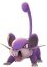
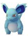
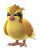
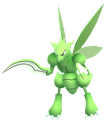
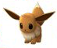
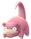

Day 1 - Palo Alto to Redwood City
I'm sitting next to the wide salt marshes off Redwood City, behind some oleander bushes that separate me from the road. It's night, both on my phone as well as outside, and I decided to try to record a bit my thoughts and experiences on this pokétravel.
First of all: It's quite fun! :) I'm just going on a bike ride, but there's this additional level to it, some small task that is constantly there if I want to have it. If I don't want to, and rather just look at the passing landscape, it's pretty easy to turn it off.
I started late, because the GoPro I bought through craigslist a few days ago was making troubles. I'm not too lucky with the action cameras so far... I read up on the issue and realized it might be related to a bad SD card. After a short down time that had followed my excitement of "starting early in the morning", and earning $55 online as a distraction, I decided to start anyways.
My first stop brought me to Fry's Electronics, a huge store in Palo Alto that sells all sorts of electronic equipment. I decided to go get a proper SD card and assume that the camera was fine and didnt freeze because of bigger problems. Got one after careful consideration, and even a 53Cents iPhone 4 screen protector for my iPhone 5C. It snugly fits, leaving the top free and framing the time with the loudspeaker cutout : )
So what's there to say. Mostly it's not too interesting to read these journals afterwards, or for someone else, so I'll try to think about what were the interesting things for me, actually.
Recently I found out why thee are these people sitting all day (and night) at the train crossings... Suicides...
I enjoy being part of the Pokémon Go whatsapp group of those SF people. They all feel very nice and it's sweet to have some company, even if only remotley like that. Maybe that's also easier, to have it only remotely like that. They've also already told me quite a lot about interesting spawning grounds, and I'll go ahead and collect that information so I can adapt my route accordingly.
- Dolores Park (Aerodactyl)
- Golden Gate Park = GGP
- Land's End
- Beach Chalet
- Fort Mason (Presidio)
- Stow Lake (inside GGP) (Evee, Bulbasaur, Psyduck, Snorlax)
- Inner Sunset 11th Ave x Irving Street Corner (Gengar)
- Richmond (get gyms)
- El Cerrito (get gyms!)
- watching Youtube checking Pokévision every hour
- Y2E2 Stanford Campus (Lickitung)
- Judah St x 38th St (Dragonite)
- Los Cerritos Community Center (Park): Fremont Dratini nest (now Evees)
- Embarcadero (Dratini)
- WALK: Ferry Building -> Fort Mason -> Beach Chalet (Dratinis, bulbasaur, squirlte)
- Great Highway, La Play Street (Lapras)
- Castro x Liberty St. (Onyx)
- Grand View Park, Sunset Neighborhood (Onyx)
- Berkely Marina (Lapras)
- Stern Grove (Abra)
- Lake Merced (Venasaur)
- Berkeley: Martin Luther King Jr. Way x Channing Way (Venasaur, Dragonite)
My thoughts at the end of the first day are, that there are moments when it actually feels like a little Pokémon adventure travel. When I approached the Redwood City Harbor area this evening, biking on that long path, the sun setting on my left and the large buildings shining green, I did feel like I imagine feeling in the game, approaching a new City. And man: I made it. I biked from one city on my map to the next one ; ) Wasn't necessarily the plan, but hei! it's cool with me.
Another thought is, that catching Pokémon doesn't work very well like that. I mean, completing the Pokédex, getting many, getting specific ones, etc. The whole catching business. Because it still takes pretty long to get from one place to another, it's still hard to find specific mons with the three-steps around and Pokévision simply not showing many or any.
So, primarily, it is a travel. And only secondarily it is a travel to catch Pokémon. It is still very integrated, the whole Go experience. I have the app running all the time and I check frequently. I have those people I am chatting with, and we talk about Pokémon. And I try (but didn't manage well) to utilize these other apps, to try to pinpoint where one really is and maybe end up finding interesting ones.
So I biked. The sun was sweet and set during the evening for a very long time. Some special flowers were in bloom that gave off a very distinct smell that lingered in the air, together with cut grass. It might have been wild fennel, but really tall plants. People were walking in bunches in the evening, around the park, together, small kids with bikes, couples, and people alone were running. I wonder how is it possible that Americans are fat - they have going for a walk outside so established as a together-activity! I passed by some people talking about hatching eggs, and I find it really beautiful how pervasive the game is. That is one reason why I wanted to go on this trip. To look around and see it popping up here and there. It's making a real difference in people's lives. Suddenly people walk. One guy in the whatsapp group wrote today that he walked 40 miles in the past week. A week ago or so I heard some people saying "Obama tries to do away with obesity, and then Pokémon Go comes out and it just solves within a few days..." It's obviously overdone, but it's not so far from the truth. I believe it is a very nice example of positive influence.
Also the groups formed, young kids together with their friends together with their older brother and their friends. Little groups walking around together catching Pokémon. Outside. Awesome! And families together. Parents playing with their kids. And couples taking walks. And also people alone. Middle aged men, women, young boys in two, girl groups... everyone is playing! It's quite impressive, it is.
Okay, just some thoughts...
Another thing I want to note, is that hatching works pretty well. Catching not really, but hatching does. I hatched today already 5 Pokémon on the first day of the trip. While most of them weren't too interesting, one was actually a Scyther. Yay! : ) I bike slowly, and the game counts my steps, or most of it at least. So eggies hatch. It's cool! Except that now I only have one incubator, so it'll slow down considerably. But okay. I have many more miles to roll!
Day 1. Pretty views. An Evee at the Oval. A Slowbro around Facebook. The smell of wild Fennel. White crusts on the salt marshes. Normal outdoor Americans. The road to Redwood City Harbor. My sitting spot my sleeping spot. A skunk that just walks by. Planes flying, sky graying, trains honking, loading stones. Me here, finally out. Finally moving, and on the road again. My bike my helmet my sleeping bag and me. Time to say good night. Good night. : )
Hatches
| Image | Pokémon | CP |
|---|---|---|
| Jynx | ||
| Lapras | 1200 | |
|  | Rattata | 313 |
|  | Nidoran female | 487 |
|  | Pidgey | ? |
|  | Scyther | 1152 |
| Krabby | 433 |
Catches
| Tinyimage | Pokémon | CP | Where? | Caught? |  | Evee (dubbed #1, because) | 293 | the Oval | Yep! | Seel | 569 | a Palo Alto park | Yep! |  | Slowpoke | 524 | Facebook HQ | Yep! | Kabuto | 1200 | among the nice smells and the sea | Nope. |
|---|